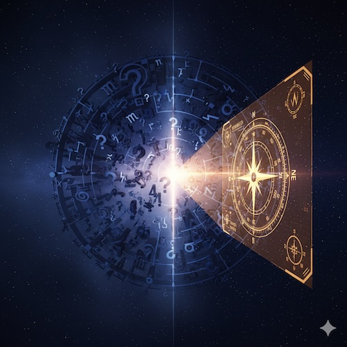

Приложение 1: Часто Задаваемые Вопросы о Теории [МНА]
В этом разделе собраны ответы на самые частые вопросы, возникающие при изучении Мета-Научной Астрологии. Его цель — прояснить ключевые моменты теории и помочь читателю лучше понять её внутреннюю логику.

1. Вашa теория основана на концепции [Поля] и активного сознания. Но это недоказуемо. На чем основана ваша уверенность?
[Ответ]: Вы правы, это недоказуемо в рамках классического механистического эксперимента. [МНА] позиционирует эти концепции как философские аксиомы или структурные аналогии. Сила этих аксиом определяется их объяснительной способностью — возможностью построить непротиворечивую модель, элегантно описывающую феномены синхронистичности, интуиции и цикличности.
2. Куда в [МНА] исчезли понятия достоинств планет (обитель, экзальтация, изгнание, падение)? Как теперь определяется "сила" планеты?
[Ответ]: Традиционная система достоинств базировалась на мифологических представлениях. [МНА] заменяет это структурной моделью. Значимость планеты определяется её Структурным Весом в иерархии карты. "Сильная" планета — это та, что попадает в Уровень 1 (Столпы): находится в кардинальном аспекте к Светилам или у углов карты.
3. Как именно работает механизм влияния сознания на [Поле]? Что такое "коллапс вероятностей"?
[Ответ]: Точный механизм лежит на переднем крае физики (проблема измерения). В нашей модели сознание выступает как фокусирующий фактор. Акт сфокусированного внимания (намерение) вносит информацию в систему, снижает неопределенность и помогает "кристаллизовать" один из потенциальных сценариев в конкретное событие.
4. Почему вы используете точку кульминации Солнца [MC] как точку отсчета для системы Домов, а не традиционный Асцендент?
[Ответ]: Это следует из принципа Структурного Апекса. Для человека на Земле основной вектор синхронизации — Солнце. Кульминация Солнца на меридиане [MC] — это самая объективная, энергетически мощная и геометрически "чистая" точка суточного цикла, независимая от локальных искажений горизонта.
5. Есть ли научные или статистические доказательства работы [МНА]?
[Ответ]: [МНА] скептически относится к простым статистическим "доказательствам", так как они игнорируют сложность системы. Согласно модели «Тело-Скафандр», два человека с одинаковой картой будут реагировать по-разному из-за разного Биологического Субстрата и Жизненного Контекста. Проверка [МНА] лежит в её практической эффективности для конкретного пользователя.
6. Почему в [МНА] не используются популярные методы прогрессий или дирекций?
[Ответ]: Стремясь к методологической чистоте, [МНА] отдает приоритет Транзитам — анализу реального физического положения планет в [Поле]. Символические методы («день за год») являются искусственными конструктами, не отражающими актуальное состояние космической среды.
7. Почему вы применяете одни и те же орбисы (1° и 7°) ко всем планетам, даже медленным?
[Ответ]: Это ключевой инсайт [МНА]. Орбис — это не свойство планеты (передатчика), а свойство человеческого Приемника. Наше восприятие биологически откалибровано суточными ритмами Солнца (1°) и Луны (13°). Мы измеряем внешние сигналы своей "внутренней линейкой".
8. Мой знак Зодиака в [МНА] отличается от традиционного. Какой из них верный?
[Ответ]: Традиционная астрология использует Тропический Зодиак (сезоны). [МНА] использует Галактический Зодиак, привязанный к центру Галактики. Сдвиг составляет около 3 градусов. Если вы родились в первые дни Овна, ваша универсальная функция — это завершение и синтез цикла (Рыбы), хотя вы и выражаете её с весенней энергией.